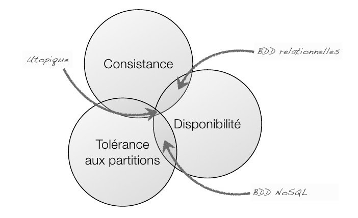

les bases de données NO-SQL
NO-SQL designe une famille de systèmes de gestion de base de données (SGBD) qui s'écarte du paradigme classique des bases relationnelles.
le théorème cap
Ce théorème est destiné a evaluer les systèmes de stockage distribués.
Il definit 3 proprietés
Cohérence (ou consistance des données)
tous les nœuds du système voient exactement les mêmes données au même moment ;
Disponibilité
garantie que toutes les requêtes reçoivent une réponse;
Tolérance au partitionnement
aucune panne moins importante qu'une coupure totale du réseau ne doit empêcher le système de répondre correctement (ou encore : en cas de morcellement en sous-réseaux, chacun doit pouvoir fonctionner de manière autonome).
D'apres ce théorème un systeme de calcul distribué ne peut garantir, à un instant t que deux de ces contraintes jamais trois.
un système NO-SQL assurera les proprietés de disponibilité et de tolérance au partitionnement alors qu'un systeme classique (relationelle) assurera les proprietés de disponibilité et de cohérence.

Éléments historiques
La domination historique des SGBD relationnels
Les SGBD relationnels crées dans les années 1970 se sont progressivement imposés jusqu'à devenir le paradigme de base de données très largement dominant au début des années 1990. Plusieurs autres modèles de base de données ont émergé, tels les SGBD orientés objet, SGBD hiérarchique, SGBD relationnel-objet... mais leur utilisation est restée très limitée. Ce n'est que dans le courant des années 2000 avec le développement de grandes entreprises internet (Google, Amazon, Ebay...) brassant des quantités énormes de données et le développement de l'informatique en cluster que la domination sans partage du modèle relationnel a été remise en question car souffrant de limitations rédhibitoires pour ces nouvelles pratiques.
Les pionniers du modèle "NoSQL"
Ce sont les grandes entreprises du web amenées a traiter des volumes de données très importants qui ont été les premières confrontées aux limitations intrinsèques des SGBD relationnels traditionnels. Ces systèmes étant fondés sur une application stricte des propriétés ACID, et généralement conçus pour fonctionner sur des ordinateurs uniques, ont rapidement posé des problèmes de scalabilité.
Afin de répondre à ces limites, ces entreprises ont commencé à développer leurs propres systèmes de gestion de base de données pouvant fonctionner sur des architectures matérielles distribuées et permettant de traiter des volumes de données importants. Les systèmes propriétaires qui en ont résulté, Google (BigTable), Amazon (Dynamo (en)), LinkedIn (Project Voldemort (en)), Facebook (Cassandra Project puis HBase), SourceForge.net (MongoDB), Ubuntu One (CouchDB), Baidu (Hypertable) etc.... ont été les premiers précurseurs du modèle NoSQL 4.
Les performances restent bonnes avec la montée en charge (scalabilité) en multipliant simplement le nombre de serveurs, solution raisonnable avec la baisse des coûts, en particulier si les revenus croissent en même temps que l'activité5. Les systèmes géants sont les premiers concernés: énorme quantité de données6, structuration relationnelle faible (ou de moindre importance que la capacité d'accès très rapide, quitte à multiplier les serveurs).
Un modèle typique en NoSQL est le système clé-valeur, avec une base de données pouvant se résumer topologiquement à un simple tableau associatif unidimensionnel avec des millions — voire des milliards — d'entrées. Parmi les applications typiques, on retrouve des analyses temps-réel, statistiques, du stockage de logs (journaux), etc.
Invention et popularisation du terme "NoSQL"
La parution d'articles présentant ces systèmes propriétaires a conduit au développement de plusieurs projets souvent open-sources reprenant à la fin des années 2000/début des années 2010 ces grands principes, à savoir des systèmes scalables par architectures matérielles distribuées, et ne visant pas une application stricte du standard ACID.
Le 11 juin 2009, Johan Oskarsson, ingénieur informaticien à Londres, souhaite organiser une rencontre meetup à San Francisco pour effectuer un tour d'horizon de ces nouveaux systèmes "open-source, distribués et non-relationnels". Il souhaite un nom percutant et facile à retenir pour cette conférence, après avoir consulté le canal IRC #Cassandra, le nom "NoSQL" est retenu. Cette dénomination ne devait initialement servir qu'à désigner cette convention mais elle passera à la postérité en devenant la désignation de cette génération d'outils. L'interprétation "not only SQL" ne sera inventée plus tard que comme rétro-acronyme3,7.
De nombreux spécialistes se sont plaints de l'inexactitude du terme "NoSQL" et des confusions qu'il pouvait créer, lui préférant parfois le terme "NoRel" ("not only relational") ou d'autres désignations plus spécifiques, mais le terme reste le plus populaire3,4.
La convention "NoSQL" de juin 2009
Plus de 100 développeurs de logiciels ont assisté à des présentations de solutions telles que Project Voldemort, Cassandra Project, Dynomite, HBase, Hypertable, CouchDB et MongoDB.
La rencontre de 2009 à San Francisco est considérée comme l'inauguration de la communauté des développeurs de logiciels NoSQL. Des développeurs qui, selon le magazine Computerworld, « racontent comment ils ont renversé la tyrannie des coûteux et lents SGBD relationnels par des moyens plus simples et plus rapides de manipuler des données ». Selon Jon Travis, un des présentateurs de la conférence, « les SGBD relationnels en font trop, alors que les produits NoSQL font exactement ce dont vous avez besoin ». Les leaders de cette communauté sont majoritairement des start-up qui n'avaient pas les moyens d'acquérir les licences Oracle, et ont donc développé leurs propres SGBD en imitant les produits de Google et d'Amazon.com. Les produits qu'ils ont créés peuvent manipuler de très grandes quantités de données (centaines de téraoctets) et offrent une évolutivité à la charge adaptée aux besoins des applications Web 2.0, ce qui les rend pertinents. Les auteurs décrivent leurs produits comme n'étant pas des SGBD, mais plutôt des logiciels de stockage de données8.
Les SGBD non relationnels, plus anciens que les SGBD relationnels, sont classiques sur les mainframes et les logiciels d'annuaire, performants là où les lectures sont bien plus fréquentes que les écritures (par exemple LDAP). Leur principe connaît une nouvelle jeunesse avec le NoSQL, porté par le domaine des services Internet, car la plupart des logiciels NoSQL sont destinés à permettre la répartition de charge des grands services Internet.
En 2011, un travail de spécification pour un langage de manipulation standardisé a débuté sous le nom de UnQL (Unstructured Query Language). Il se propose de formaliser la façon dont les bases NoSQL font des requêtes dans les collections (le pendant des tables de données pour les bases relationnelles). Bien qu'UnQL ait été présenté comme une abstraction au-dessus de SQL, ce dernier correspondant à un UnQL très contraint, il a été rappelé qu'UnQL ne recouvre pas tout le LDD de SQL. En réalité, les deux domaines, bases relationnelles et NoSQL, répondant à des besoins et des contraintes différentes, coexistent souvent dans les architectures métiers.
Théorie
Les caractéristiques principales des SGBD NoSQL sont de permettre la manipulation de volumes de données important et de permettre une scalabilité horizontales. Ces systèmes ne respectent en général pas les standards des SGBD relationnels, mais il ne s'agit pas à proprement parler d'une propriété recherchée mais plus d'une concession permettant des traitements plus rapides pour certains types d'application.
A ce titre les structures des SGBD restent en date de 2016 très hétérogènes. Nous pouvons cependant citer quelques familles principales émergentes.
NoSQL orienté-aggrégats
Une des caractéristiques retrouvée dans de nombreux SGBD NoSQL est l'utilisation "d’agrégats de données" constitués d'un ensemble de données souvent "consultées/modifiées en même temps" et qui peuvent être déployées sur des serveurs indépendants3.
A titre d'exemple considérons une application de commerce-en-ligne conçue de manière à accéder fréquemment au informations d'un client (adresses etc...) et à l'historique de ses achats (par exemple pour lui proposer des réductions).
un SGBD relationnel typique modélisera ce système en créant une table des informations clients et une table des achats puis en effectuant une jointure entre ces dernières à chaque opération. Cette architecture pourra poser problème lorsque le nombre de clients/achat deviendra important et sera difficile à répartir entre plusieurs serveur
a contrario une architecture SGBD NoSQL typique aura tendance à modéliser ce problème en un ensemble d'agrégats constitué des informations d'un client et de ses achats. Cette architecture et plus facilement scalable en effet ces agrégats interagissent peu entre eux et peuvent facilement être répartis sur un cluster de serveurs. Cette architecture pourra par contre poser problème si pour une raison quelconque on est amené à effectuer des requêtes qui ne correspondent pas aux cas d'utilisation immédiatement considérés. Par exemple une demande de calculer le nombre total de clients ou d'achats pourra être moins efficace que dans un système relationnel qui conserve l'ensemble des clients (resp. achats) dans une table unique.
NoSQL orienté-graphes[modifier | modifier le code]
Cette section est vide, insuffisamment détaillée ou incomplète. Votre aide est la bienvenue !
NoSQL sans schéma
La première étape de la création d'une base de données relationnelle est de définir son schéma c'est à dire l'ensemble des tables la composant et l'ensemble des champs de ces tables. Cette étapes crée une certaine rigidité dans l'implémentation, implique d'avoir une vision assez claire des évolutions de l'application et peu poser problème si la structure des données recueillies change dans le temps. Les systèmes NoSQL sans-schémas peuvent ignorer cette étape et stocker des données hétérogènes au fur et à mesure de leur alimentation. Cette utilisation permet une grande flexibilité et des capacités d'adaptation au niveau de la base de donnée. La contrepartie est que les applications qui liront la base de données devront être capables d'intégrer des données plus hétérogènes et de structure plus complexe.
Autres
Les capacités ACID garantissent que si plusieurs utilisateurs font de manière simultanée des modifications des données, toutes les modifications vont être prises en compte, dans un ordre précis et maîtrisé de manière à avoir un résultat cohérent (intégrité des données) avec l'historique des modifications faites par chacun. La mise en œuvre stricte des capacités ACID entraîne des coûts logiciels importants et un niveau de performance moindre à infrastructure matérielle équivalente.
Les SGBD d'annuaires ont servi de modèle en permettant de lever certaines de ces contraintes en fonction de l'usage, en particulier dans les cas où la grande majorité des accès aux bases de données consistent en lectures sans modification (dans ce cas, seule la propriété de persistance importe).
Pour faire face à des volumes importants de données, auxquelles on accède de différents endroits du monde, il faut pouvoir répliquer ces données sur différentes machines physiques, c'est ce que l'on appelle un environnement distribué. Le théorème CAP démontre qu'il n'est pas possible d'assurer des transactions totalement ACID dans un environnement distribué.
Le protocole Paxos est très efficace pour la lecture dans un environnement distribué, beaucoup moins pour l'écriture / modification et il ne supporte pas les transactions ACID.
Les solutions du marché implémentent ce protocole en ajoutant leurs techniques propres pour limiter les conséquences de l'impossibilité d'ACID lors des écritures et mises à jour de données.
Le marché
Les SGBD relationnels sont largement répandus dans les entreprises. Dimensionnés pour une quantité d'informations et un nombre d'utilisateurs typiques d'une entreprise, ils ont pour fonction principale le traitement de transactions.
Ils montrent cependant leurs limites lorsqu'ils sont utilisés dans un périmètre plus large, tel qu'un site web populaire, en répartition de charge (load balancing), fréquenté par des millions de visiteurs dans le monde entier : les SGBD relationnels exigeraient alors des logiciels et des ordinateurs coûteux ainsi que des compétences en optimisation peu répandues.
Ce segment de marché est de ce fait occupé par les logiciels NoSQL, conçus spécifiquement pour un usage de type Internet9. Ces produits abandonnent la représentation matricielle de l'information et le langage de commande SQL en échange d'une simplicité, d'une performance et surtout d'une scalabilité accrues5. La complexité de mise en œuvre du traitement des transactions a été réduite dans le but d'obtenir des services plus simples et plus spécialisés10.
Simple à mettre en œuvre, le stockage d'information à l'aide de tableaux associatifs (dits clé / valeur) existe depuis le début de l'histoire des bases de données, en 1970. Des langages comme Perl et PHP les ont rendus familiers aux programmeurs. Les nouvelles demandes en rapport avec les sites web de grande audience apparus dans les années 2000 et la facilité de mise en œuvre des tableaux associatifs ont fait émerger ces solutions. Elles ont comme point commun l'abandon du langage SQL et sont donc nommées NoSQL. Cela ne signifie pas qu'aucune ne proposera jamais ce langage en option11.
Dans le marché des SGBD NoSQL se trouvent Cassandra, MongoDB, Voldemort, CouchDB et SimpleDB. Lors d'un sondage réalisé en 2010 auprès de professionnels de l'informatique, 44 % des sondés répondaient encore qu'ils n'ont jamais entendu parler de NoSQL12.